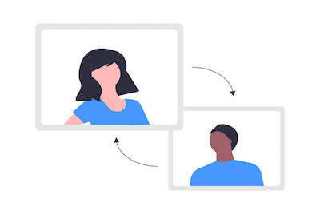
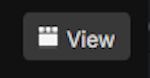
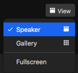
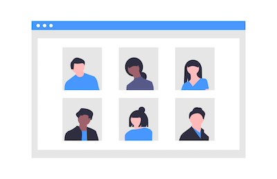
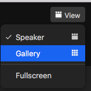

When you first join a zoom meeting, usually you're automatically on active speaker mode,
which means you will only see the person who is talking

If you want this setting (only seeing one person at a time) first locate the view button in
the top right of your screen

Once you click that, you will see a list with different options to choose from. Select
Speaker

If you want to see more than one person on zoom, there's a setting called gallery view that lets you see a bunch of people

If you want to change this setting so you can see multiple people, first locate the view button in
the top right of your screen
Once you click that, you will see a list with different options to choose from. Select
Gallery
